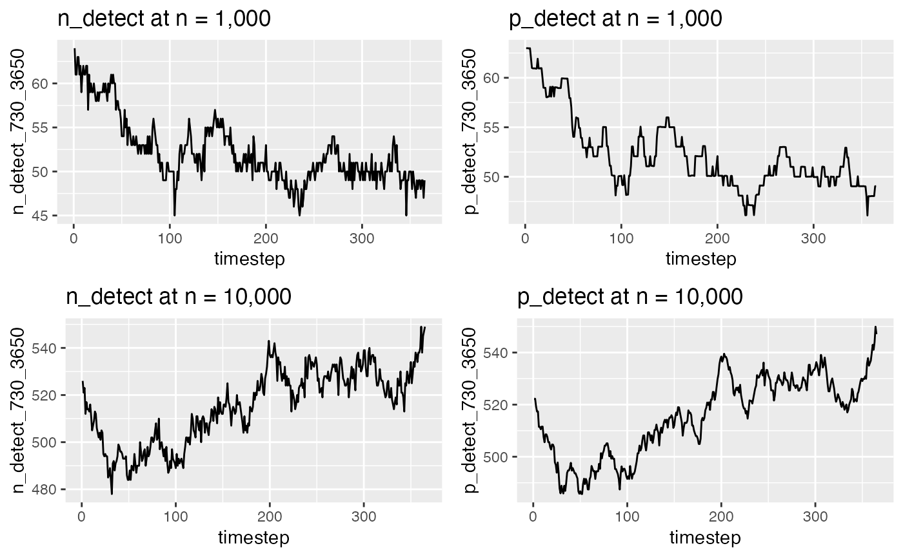

Variation
Variation.RmdVariation in outputs
Malariasimulation is a stochastic model, so there will be be variation in model outputs. For example, we could look at detected malaria cases over a year…
# A small population
p <- get_parameters(list(
human_population = 1000,
individual_mosquitoes = FALSE
))
p <- set_equilibrium(p, 2)
small_o <- run_simulation(365, p)
p <- get_parameters(list(
human_population = 10000,
individual_mosquitoes = FALSE
))
p <- set_equilibrium(p, 2)
big_o <- run_simulation(365, p)
plot_grid(
ggplot(small_o) + geom_line(aes(timestep, n_detect_730_3650)) + ggtitle('n_detect at n = 1,000'),
ggplot(small_o) + geom_line(aes(timestep, p_detect_730_3650)) + ggtitle('p_detect at n = 1,000'),
ggplot(big_o) + geom_line(aes(timestep, n_detect_730_3650)) + ggtitle('n_detect at n = 10,000'),
ggplot(big_o) + geom_line(aes(timestep, p_detect_730_3650)) + ggtitle('p_detect at n = 10,000')
)
The n_detect output shows the result of sampling individuals who would be detected by microscopy.
While the p_detect output shows the sum of probabilities of detection in the population.
Notice that the p_detect output is slightly smoother. That’s because it forgoes the sampling step. At low population sizes, p_detect will be smoother than the n_detect counterpart.
Estimating variation
We can estimate the variation in the number of detectable cases by repeating the simulation several times…
outputs <- run_simulation_with_repetitions(
timesteps = 365,
repetitions = 10,
overrides = p,
parallel=TRUE
)
df <- aggregate(
outputs$n_detect_730_3650,
by=list(outputs$timestep),
FUN = function(x) {
c(
median = median(x),
lowq = unname(quantile(x, probs = .25)),
highq = unname(quantile(x, probs = .75)),
mean = mean(x),
lowci = mean(x) + 1.96*sd(x),
highci = mean(x) - 1.96*sd(x)
)
}
)
df <- data.frame(cbind(t = df$Group.1, df$x))
plot_grid(
ggplot(df)
+ geom_line(aes(x = t, y = median, group = 1))
+ geom_ribbon(aes(x = t, ymin = lowq, ymax = highq), alpha = .2)
+ xlab('timestep') + ylab('n_detect') + ggtitle('IQR spread'),
ggplot(df)
+ geom_line(aes(x = t, y = mean, group = 1))
+ geom_ribbon(aes(x = t, ymin = lowci, ymax = highci), alpha = .2)
+ xlab('timestep') + ylab('n_detect') + ggtitle('95% confidence interval')
)
These are useful techniques for comparing the expected variance from model outputs to outcomes from trials with lower population sizes.